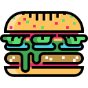

Рецепт Крабсбургера
Сложный рецепт

- Солёные огурцы
-
Сметана (приготовленная 2, 4, 8 или 16 часов назад)
- Баклажан, выращенный под водой
-
Булочка из муки с добавлением морской капусты
-
Отбивная из мяса молодых соевых бобов
-
Морская вода

- Обжарить отбивную на горячем валуне
- Разрезать булочку
- Уложить слой солёных огурцов
- Покрыть их сметаной
-
Уложить отбивную и побрызгать морской водой для изгнания
морского дьявола
- Сверху уложить нарезанные кольцами баклажаны
- Укрыть сверху второй половиной булочки
-
Финальный штрих - окунуть шедевр в морскую воду и подавать, пока не
высохло